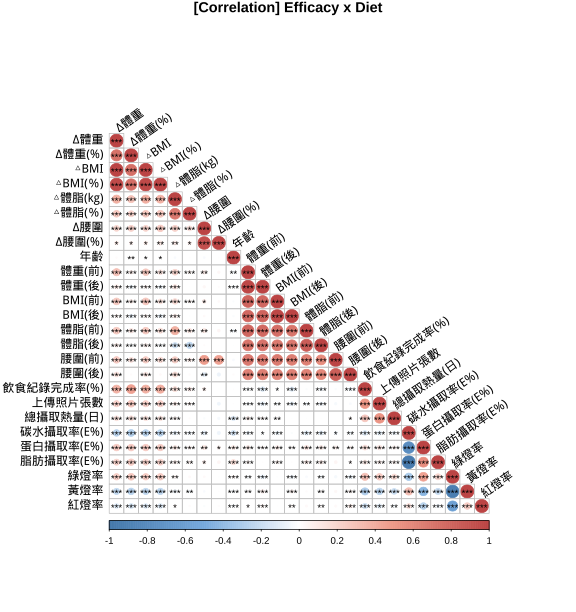

1.2 相關分析(Correlation Analysis)
飲食紀錄(diet) x 成效
減重表現與「飲食紀律」呈現顯著正相關。(飲食紀錄完成度、綠燈率、三大營養素攝取比例、六大類食物攝取量等)。
「飲食紀錄完成度」與飲食紀律有關：
「飲食紀錄完成度」與「綠燈率」、「平均攝取熱量」、「蛋白質、脂肪攝取率」、「蔬菜、蛋豆魚肉、油脂攝取量」呈現正相關。
與「黃、紅燈率」、「碳水化合物攝取率」呈負相關。
六大類食物攝取量：
「蔬菜」、「蛋豆魚肉」、「油脂」與減重成效呈現正相關；且這三類食物彼此呈現正相關。
「水果」、「五穀雜糧」與減重成效成負相關。
